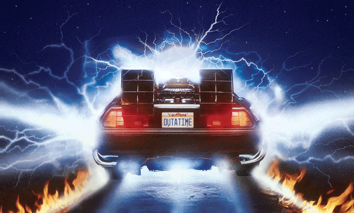

<!--
  Generated template for the FeedPage page.

  See http://ionicframework.com/docs/components/#navigation for more info on
  Ionic pages and navigation.
-->
<ion-header>

    <ion-navbar>
        <ion-title>FeedPage</ion-title>
    </ion-navbar>

</ion-header>


<ion-content padding>

</ion-content>
<ion-header>
    <ion-navbar>
        <ion-title>Feed</ion-title>
    </ion-navbar>
</ion-header>

<ion-content padding>
    <div>
        <h1></h1>
    </div>

    <ion-card>

        <ion-item>
            <ion-avatar item-start>
                
            </ion-avatar>
            <h2 class='feed-title'>{{object_feed.titulo}}</h2>
            <p class="feed-date">{{object_feed.data}}</p>
        </ion-item>

        

        <ion-card-content>
            <p>{{object_feed.descricao}}</p>
        </ion-card-content>

        <ion-row>
            <ion-col>
                <button ion-button icon-start clear small>
          <ion-icon name="thumbs-up"></ion-icon>
          <div>{{object_feed.qtd_like}}</div>
        </button>
            </ion-col>
            <ion-col>
                <button ion-button icon-start clear small>
          <ion-icon name="text"></ion-icon>
          <div>{{object_feed.qtd_coment}}</div>
        </button>
            </ion-col>
            <ion-col align-self-center text-center>
                <ion-note>
                    {{object_feed.time_coment}}
                </ion-note>
            </ion-col>
        </ion-row>

    </ion-card>
</ion-content>